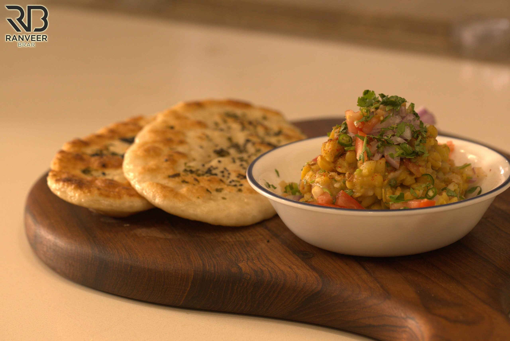

Chhole Kulche Recipe

About Chhole Kulche
Matar kulcha is one of the popular street food of north India specially in Delhi and amritsar. You might see many street vendors selling matar kulcha in roads or even outside schools and colleges. They serve the matar in large brass pots.Another very popular street food that comes very close to matar kulcha is chole bhature. Chole bhature is a Punjabi recipe of white chickpeas curry with fried leavened bread known as bhatura. Chole bhatura is popular almost all over India and even abroad.
Ingredients
- 1.25 cup dried white peas (safed matar)
- 3 to 4 cup water for pressure cooking the dried white peas
- 1 tablespoon oil
- ½ teaspoon cumin seeds
- 1 teaspoon chaat masala
- ½ teaspoon roasted cumin powder
- ½ teaspoon dried mango powder (amchur powder)
- ¼ teaspoon red chili powder
- ¼ teaspoon Garam Masala
Steps
- Soak the matar or dried white peas overnight or for 7 to 8 hours.
- Drain and pressure cook in 3 to 4 cups of water till the matar is completely cooked.
- If there is extra water and the mixture is thin, then simmer till the matar achieves a medium consistency.
- Mash the matar slightly with a wooden spoon.
- The soaked matar can also be cooked in a pan, but it will take a lot of time.
- In a pan, heat oil. On low heat, first brown the cumin seeds.
- Remove the pan from heat.
- Then, add the dry spice powders one by one - chaat masala, roasted cumin powder, amchur powder, red chili powder and garam masala powder.
- Stir and immediately pour this mixture into the cooked matar or add the cooked matar to this mixture.
- Switch on the heat and let the matar get heated through for 3 to 4 minutes.
- Now, add the prepared jaljeera chutney and stir.
- If the matar mixture looks dry, add some water.
- Cook the matar or peas curry till all the flavors get mingled, for about 2 to 3 minutes.
- Check the seasoning and add more black salt if required.
- You can make this and keep it aside till you prepare the kulchas. While serving, reheat the matar curry.
- Top the matar curry with onions, tomato, ginger, chilies and coriander leaves. Squeeze some lemon juice on top and mix lightly.
- Serve Matar Kulcha in bowls or plates.